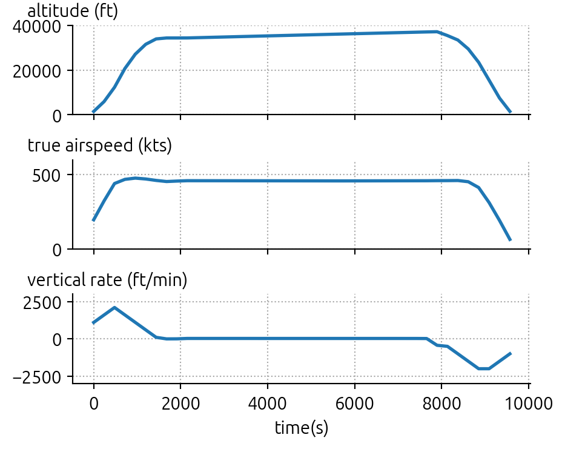
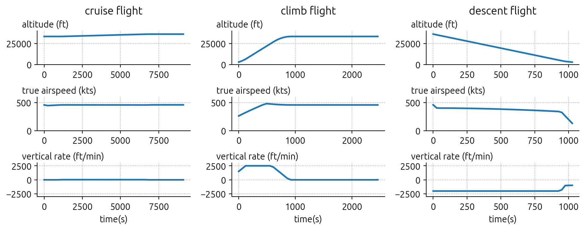
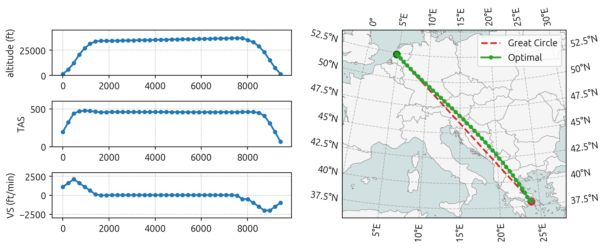

from openap import top
actype = "A320"
origin = "EHAM"
destination = "LGAV"
# initial mass, can be 64_000 (kg)
m0 = 66_000
# or the faction of MTOW
m0 = 0.85 8 🦸 Trajectory Optimizer
Previously, the majority of flight optimizers mentioned in the literature remained closed-source, which posed a significant drawback in terms of reproducible research.
The trajectory optimizer (TOP) addresses this lack of open-source flight trajectory optimizer by providing everyone with open access to trajectory optimization based on a non-linear optimal control direct collocation approach.
The TOP library can consider 3D or 4D wind fields. It can be utilized in various flight phases, either individually or in combination. It provides traditional fuel and cost index objectives alongside climate metrics-based objectives that incorporate global warming or temperature potential.
Furthermore, I have designed a mechanism to include a complex 4D cost grid in trajectory optimization. This new mechanism allows easy generation of, for example, contrail-optimal trajectories.
8.1 Paper
The optimization framework was first published in my following paper: Sun (2022)
Note that there have been quite many improvements and changes to the software code since the paper was published.
8.2 Install
The opeanp.top library is designed to be a module inside the openap scope. You can install the most recent release thorugh pip:
pip install --upgrade openap-topThis will install openap.top and related dependencies.
Alternatively, if you want to install the most recent development version:
pip install --upgrade git+https://github.com/junzis/openap-top8.3 Quick start
Example code to generate a fuel-optimal flight between two airports. First, we need to set up a few parameters, including origin, destination, actype, and m0 (initial mass).
The initial mass m0 can be the fraction of the maximum take-off mass (between 0 and 1), or it can be the mass in kg (for example, 65000 kg).
In this simple example, we will generate a complete flight using top.CompleteFlight(). We will generate a fuel-optimal flight by setting objective to "fuel" in the trajectory generation function.
optimizer = top.CompleteFlight(actype, origin, destination, m0=m0)
flight = optimizer.trajectory(objective="fuel")
flight.head()| ts | x | y | h | latitude | longitude | altitude | mach | tas | vertical_rate | heading | mass | fuel | |
|---|---|---|---|---|---|---|---|---|---|---|---|---|---|
| 0 | 0.0 | -652425.011796 | 840651.921723 | 457.200000 | 52.316584 | 4.746242 | 1500.0 | 0.3000 | 197.42 | 1104.0 | 129.51 | 66300.0 | 327.029760 |
| 1 | 239.0 | -633748.745737 | 825253.297593 | 1799.430636 | 52.199826 | 5.046304 | 5904.0 | 0.5000 | 323.96 | 1604.0 | 136.98 | 65972.0 | 332.077898 |
| 2 | 479.0 | -607070.077329 | 796660.798968 | 3749.426799 | 51.972943 | 5.483590 | 12301.0 | 0.6957 | 440.29 | 2104.0 | 136.98 | 65647.0 | 374.607022 |
| 3 | 718.0 | -571151.872429 | 758165.953153 | 6307.188487 | 51.664984 | 6.065383 | 20693.0 | 0.7643 | 468.20 | 1604.0 | 136.98 | 65298.0 | 321.817319 |
| 4 | 957.0 | -532609.236834 | 716858.409561 | 8257.184648 | 51.331405 | 6.680959 | 27091.0 | 0.7985 | 476.48 | 1104.0 | 136.98 | 64996.0 | 272.353599 |
In the previous table, we have the final fuel-optimal trajectory. Next, we can visualize the altitude, speed, and vertical rate.
import matplotlib
import matplotlib.pyplot as plt
# set up the plot styles
matplotlib.rc("font", size=11)
matplotlib.rc("font", family="Ubuntu")
matplotlib.rc("lines", linewidth=2, markersize=8)
matplotlib.rc("grid", color="darkgray", linestyle=":")
# function to make plot nicer
def format_ax(ax):
ax.spines["right"].set_visible(False)
ax.spines["top"].set_visible(False)
ax.yaxis.set_label_coords(-0.1, 1.05)
ax.yaxis.label.set_rotation(0)
ax.yaxis.label.set_ha("left")
ax.grid()
fig, (ax1, ax2, ax3) = plt.subplots(3, 1, figsize=(5, 4), sharex=True)
ax1.plot(flight.ts, flight.altitude)
ax2.plot(flight.ts, flight.tas)
ax3.plot(flight.ts, flight.vertical_rate)
ax1.set_ylim(0, 40000)
ax2.set_ylim(0, 600)
ax3.set_ylim(-3000, 3000)
ax1.set_ylabel("altitude (ft)")
ax2.set_ylabel("true airspeed (kts)")
ax3.set_ylabel("vertical rate (ft/min)")
ax3.set_xlabel("time(s)")
for ax in (ax1, ax2, ax3):
format_ax(ax)
plt.tight_layout()
plt.show()
8.4 Other objective functions
Instead of the default objective functions, you can also specify different objective functions as follows:
# cost index, between 0 - 100
flight = optimizer.trajectory(objective="ci:30")
# global warming potential
flight = optimizer.trajectory(objective="gwp100")
# global temperature potential
flight = optimizer.trajectory(objective="gtp100")The final flight object is a pandas DataFrame.
8.5 Different flight phases
Instead of generating a complete flight, we can also generate cruise, climb, and descent flights using top.Crusie, top.Climb, and top.Descent classes.
cruise_flight = top.Cruise(actype, origin, destination, m0=m0).trajectory()
climb_flight = top.Climb(actype, origin, destination, m0=m0).trajectory()
descent_flight = top.Descent(actype, origin, destination, m0=m0).trajectory()CasADi - 2024-09-16 16:23:10 WARNING("solver:nlp_g failed: Inf detected for output g, at (row 663, col 0).") [.../casadi/core/oracle_function.cpp:393]Let’s visulize these trajectories:
labels = ("cruise flight", "climb flight", "descent flight")
fig, axes = plt.subplots(3, 3, figsize=(10, 4))
for i, flight in enumerate([cruise_flight, climb_flight, descent_flight]):
ax1, ax2, ax3 = axes[:, i]
ax1.plot(flight.ts, flight.altitude)
ax2.plot(flight.ts, flight.tas)
ax3.plot(flight.ts, flight.vertical_rate)
ax1.set_ylabel("altitude (ft)")
ax2.set_ylabel("true airspeed (kts)")
ax3.set_ylabel("vertical rate (ft/min)")
ax1.set_ylim(0, 40000)
ax2.set_ylim(0, 600)
ax3.set_ylim(-3000, 3000)
ax1.set_title(labels[i], pad=20)
ax3.set_xlabel("time(s)")
for ax in axes.flatten():
format_ax(ax)
plt.tight_layout()
plt.show()
8.6 Optimziation with wind data
It is also possible to include 3D or 4D wind data in the optimization. The code provides an example of such a use case. Note that the wind data is obtained using fastmeteo library in this example.
import fastmeteo
import numpy as np
import pandas as pd
import openap
import warnings
warnings.filterwarnings("ignore")Next, we need to get an example wind field data using the fastmeteo library. Note the selected ERA5 data will be cached temporarily at /tmp/era5-zarr.
# get the boundary of the wind field
o = openap.nav.airport(origin)
d = openap.nav.airport(destination)
latmin = min(o["lat"], d["lat"]) - 2
latmax = max(o["lat"], d["lat"]) + 2
lonmin = min(o["lon"], d["lon"]) - 2
lonmax = max(o["lon"], d["lon"]) + 2
# create the and flatten the wind grid
latitudes = np.linspace(latmin, latmax, 20)
longitudes = np.linspace(lonmin, lonmax, 20)
altitudes = np.linspace(1000, 45000, 30)
timestamps = pd.date_range("2021-05-01 08:00:00", "2021-05-01 15:00:00", freq="1H")
latitudes, longitudes, altitudes, times = np.meshgrid(
latitudes, longitudes, altitudes, timestamps
)
grid = pd.DataFrame().assign(
latitude=latitudes.flatten(),
longitude=longitudes.flatten(),
altitude=altitudes.flatten(),
timestamp=times.flatten(),
)
# obtain the wind based on the grid
fmg = fastmeteo.Grid(local_store="/tmp/era5-zarr")
meteo_data = fmg.interpolate(grid)Let’s take a look at the meteorological data we got:
meteo_data.head()| latitude | longitude | altitude | timestamp | u_component_of_wind | v_component_of_wind | temperature | specific_humidity | |
|---|---|---|---|---|---|---|---|---|
| 0 | 35.92351 | 2.7463 | 1000.0 | 2021-05-01 08:00:00 | 2.662002 | -0.268155 | 287.403343 | 0.007505 |
| 1 | 35.92351 | 2.7463 | 1000.0 | 2021-05-01 09:00:00 | 2.610650 | 0.375755 | 288.403605 | 0.006770 |
| 2 | 35.92351 | 2.7463 | 1000.0 | 2021-05-01 10:00:00 | 3.806022 | 0.308188 | 289.144232 | 0.006112 |
| 3 | 35.92351 | 2.7463 | 1000.0 | 2021-05-01 11:00:00 | 3.865915 | -0.590817 | 290.408359 | 0.005582 |
| 4 | 35.92351 | 2.7463 | 1000.0 | 2021-05-01 12:00:00 | 4.224836 | -1.288765 | 291.951893 | 0.005171 |
Before passing this wind field to the optimizer, we need to format it correctly. The wind data needs to be in pandas.DataFrame with the following columns: - ts: timestamp in seconds, with 0 representing the time of departure of the flight - latitude: latitude of all the grid points - longitude: longitude of all the grid points - h: height of the grid points, in meters - u: u component of the wind for each grid point, in m/s - v: v component of the wind for each grid point, in m/s
wind = (
meteo_data.rename(
columns={
"u_component_of_wind": "u",
"v_component_of_wind": "v",
}
)
.assign(ts=lambda x: (x.timestamp - x.timestamp.iloc[0]).dt.total_seconds())
.eval("h=altitude * 0.3048")
)[["ts", "latitude", "longitude", "h", "u", "v"]]
wind.head()| ts | latitude | longitude | h | u | v | |
|---|---|---|---|---|---|---|
| 0 | 0.0 | 35.92351 | 2.7463 | 304.8 | 2.662002 | -0.268155 |
| 1 | 3600.0 | 35.92351 | 2.7463 | 304.8 | 2.610650 | 0.375755 |
| 2 | 7200.0 | 35.92351 | 2.7463 | 304.8 | 3.806022 | 0.308188 |
| 3 | 10800.0 | 35.92351 | 2.7463 | 304.8 | 3.865915 | -0.590817 |
| 4 | 14400.0 | 35.92351 | 2.7463 | 304.8 | 4.224836 | -1.288765 |
Last, we can run the optimization with the wind field and visulize the result:
import matplotlib.pyplot as plt
optimizer = top.CompleteFlight(actype, origin, destination, m0)
optimizer.enable_wind(wind)
flight = optimizer.trajectory(objective="fuel")
top.vis.trajectory(flight)
plt.show()